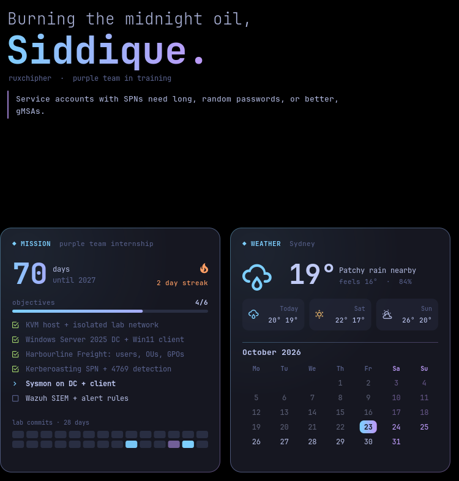

> hello, world. I'm
Abu Bakar Siddique
Second-year Cyber Security student at CQUniversity who learns by building. I break things in my own lab, then learn how to catch them, and that's why I'm working toward purple teaming.
Build the lab first.
Learn the theory second.
I'm Abu Bakar Siddique (most people call me Siddique), a second-year Bachelor of IT student at CQUniversity, majoring in Cyber Security with a minor in Application Development. I'm based in Sydney.
I learn by doing. Before I read the chapter on Kerberos, I'd rather have a domain controller running, an attacker box ready, and a log to dig through. Running the attack, watching it land in the logs, and then writing the detection is the loop that makes things click for me.
My goal is a purple team internship in 2027, where offensive and defensive security work together. Outside of study I work at Avis Budget Group as a Rental Operations Agent, which keeps me sharp on communication, time pressure, and solving problems for real people.
Harbourline Freight.
A fake company I attack and defend.
A full Active Directory environment virtualised on my own machine, built to practise real attacks and the detections that catch them.
Network topology ● online
Every VM runs under KVM on an Arch Linux host. The attacker box sits on an isolated network with no route to anything real.
- host
- Arch Linux · KVM / QEMU
- dc
- Windows Server 2025 (AD DS)
- client
- Windows 11, domain-joined
- attacker
- Kali Linux on the isolated network
- org
- Harbourline Freight · 12 users · OUs · GPOs
Kerberoasting: attack & detect
Event ID 4769A service account with an SPN is set up on purpose. I request its ticket from Kali, then hunt for that request in the domain controller's Security log.
Register an SPN, request a TGS for the service account from Kali.
Catch the request as Event 4769 on the DC.
Tune the detection, then harden the account.
Roadmap
- doneKVM host on Arch Linux, isolated lab network
- doneWindows Server 2025 DC + Windows 11 client
- doneHarbourline Freight: 12 users, OUs, GPOs
- doneSPN for Kerberoasting + 4769 detection
- nextSysmon for deeper endpoint telemetry
- nextWazuh SIEM for central alerting
A desktop that
watches its own back.
My Arch Linux laptop, customised into a security-aware workstation: custom-coded widgets that monitor the system and my lab, and a small service that alerts me to suspicious activity.



// lab and now-playing widgets shown with preview data · Wi-Fi name and IP blurred
sentinel: host alerting
blue teamA Python service I wrote that runs in the background and sends a desktop alert when something looks wrong.
- Follows the systemd journal for failed passwords: sudo, admin prompts, the login screen and SSH.
- Polls listening TCP ports and flags any new one, marked critical if it's reachable from the network.
- De-duplicates repeats and writes every alert to a log for review.
ruxchipher HUD
Lua · cairoFour desktop widgets drawn from scratch in Lua with the cairo graphics library, running on Conky.
- Battery-aware GPU polling: checks the GPU's power state first, so the monitor never wakes the RTX 4060.
- Live lab status: reads
virsh domstatsto show which VMs are running and how busy they are. - Mission tracker: my 2027 goal, lab objectives and a commit streak pulled from my lab repo's git history.
- Sentinel strip: pulses red after an alert; one click opens a plain-language report of what happened.
- Battery-friendly animation: the weather icon only animates when clicked, or for a few seconds every 10 minutes.
Both sides of the wire.
Tools and concepts I've used hands-on in my lab and coursework.
Red
Thinking like the attacker so the defence has something real to catch.
Blue
Building, hardening and watching the environment.
Build
The code and platforms everything else runs on.
Where the theory comes in.
Bachelor of Information Technology
Open a connection.
Looking for a purple team intern for 2027, or just want to talk about labs and detections? Reach out.